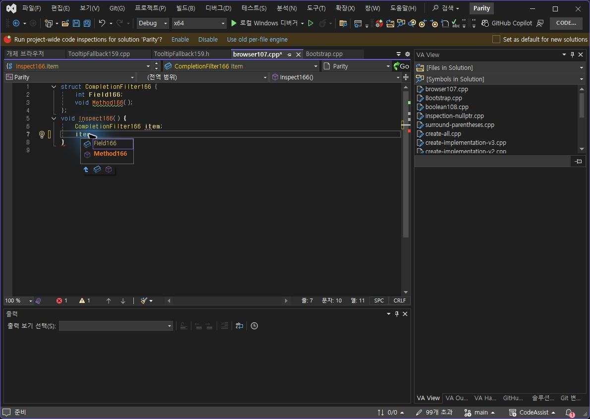
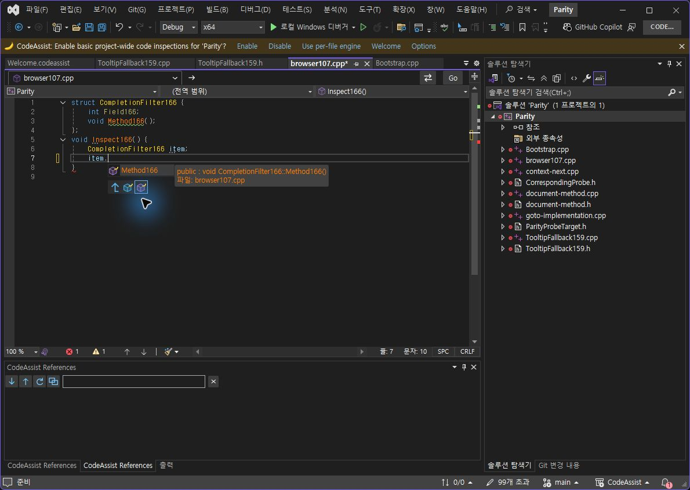
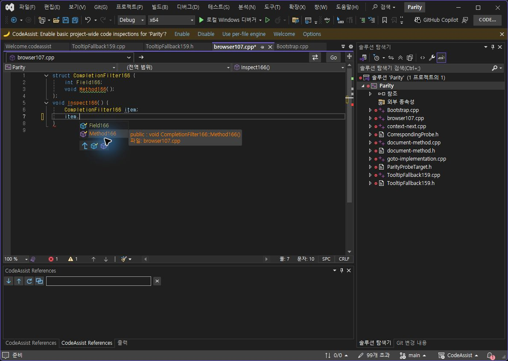
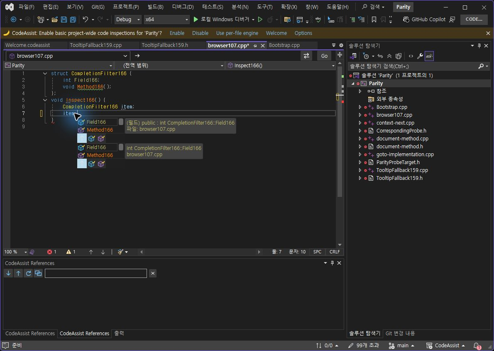

Tracefolio REPORTS & ISSUES
Tracefolio REPORTS & ISSUES자동 추천 세션·하단 필터 연결
기존 기록 이전원문에 기록된 작업 내용과 당시 검증 범위를 정리한 보관 기록입니다.
VA·CA 자동 추천과 필터 대조169
자동 추천 세션·하단 필터 연결
최종 검사 설치0.0.169. 두 SDK 빌드 성공, 설치와 실제 CLR 모듈 일치 확인.
이번 목록 상태3/3개(100%) 일치: 전체 후보2개, 필드 필터1개, 함수 필터1개. 필터 후 Tab2/2개(100%): 전체 문서 및 커서 일치. 종류 전체·모든 UI·제품 전체 유사도를 뜻하지 않습니다. 선정 옵션 누적 On/Off 표본은10/12개(83.33%)로 유지합니다.
자동 표시 중복 해결
166 실행 로그는 같은 편집기에 서로 다른 세션2개가 생성되고 두 추천 팝업이 겹치는 것을 보여 줬습니다. 167부터 편집기마다 현재 CA 세션을 하나만 유지하고 늦게 도착한 VC++ 세션이 이전 독립 세션을 교체하도록 수정했습니다. 169에서 물리 period 입력만으로 전체 후보 목록 하나가 유지됐고, Ctrl+Space로 재호출하지 않고 필터 버튼을 사용할 수 있었습니다.
버튼의 의미와 실제 연결
VA 공식 문서와 실제 버튼 실행을 대조했습니다. 첫 화살표는 상속되지 않은 멤버 우선 정렬이며 전체 표시 버튼이 아닙니다. 종류 버튼은 선택을 다시 누르면 필터가 해제되고 Ctrl/Shift로 여러 종류를 선택할 수 있습니다. 이번 구현은 이 동작을 연결했습니다. 다중 선택과 실제 상속 타입 정렬은 이번 실행 인증에서 제외했습니다. 현재 VA 사용자 값 ListNonInheritedMembersFirst=0을 확인했으며 공장 기본값으로 단정하지 않습니다.
SDK 기본 표시기에 필터 영역을 붙여 기존 목록·키보드 처리를 유지했습니다. 첫 화살표는 파란 벡터로 직접 그렸고, 필드·함수는 CA 자체 배지 아이콘을 사용합니다. 버튼의 선택 테두리는 밝고 어두운 테마에서 아이콘을 가리지 않도록 구성했습니다. 두 테마 전체 화면 재검증까지 완료한 것은 아닙니다.
| 입력·기준 | VA | CA169 |
|---|---|---|
| item 뒤에 period | Field166, Method166 | 같은2개, 추천 창1개 |
| 필드 종류 클릭 | Field166만 | Field166만, 로그 count=1 |
| 함수 종류 클릭 | Method166만 | Method166만, 로그 count=1 |
| 선택된 종류 다시 클릭 | 공식 문서 기준 해제. 이번 동일 클릭의 VA 촬영은 없음 | 2개로 복귀, CA 실행 확인만 |
| 함수 필터 후 Tab | item.Method166(), 7행21열 | 전체 문서·커서 정확히 동일 |
VA 전체 목록

CA169 자동 전체 목록

VA 필드만

CA169 필드만

VA 함수만

CA169 함수만

VA 함수 Tab

CA169 함수 Tab

CA169 필터 해제

수정 전166 중복 창 — 실패 근거

검사 중 발생한 종료 오류와 재검증
167에서 필터 클릭 후 검사 CA PID46980이 종료됐습니다. Windows .NET Runtime 이벤트는 읽기 전용 FilteredObservableCollection.Clear 호출의 InvalidOperationException을 정확한 스택으로 기록했습니다. PreviewCompletionSet을 SDK WritableCompletions로 갱신한 뒤 Filter를 실행하도록 수정했습니다. 최종169에서는 함수·해제·필드·함수·Tab 입력이 정상 적용됐고 검사 프로세스 PID39632가 살아 있는 상태로 원복·문서 저장 검사를 완료했습니다. 실패 중간본을 통과로 계산하지 않았습니다.
검사와 미완료 범위
자동 검사448/448개(100%) 통과. VS2019·Modern 빌드와 패키지 바이너리6개·단축키 등록48개 검사 통과. 이 자동 검사 숫자는 WPF 필터 전체 검증 수가 아니며 실제 버튼 동작은 위 실행 촬영·로그로 판단합니다. 저장 인덱스0개일 때 제공자가 바로 반환하던 조건도 제거했습니다. 빈 프로젝트 GUI 상태는 별도 실행하지 않았으므로 열린 멤버 모델 단위 검증과 소스 수정으로 구분합니다.
남은 항목: Ctrl/Shift 다중 선택 실제 입력, 실제 상속 멤버 우선 정렬 On/Off, 관련 종류에 따른 동적 버튼 표시·타입/매크로/헤더·접근 권한 필터, 비상속 멤버 굵게 표시 및 축소 옵션, 추천 툴팁 디자인, With Snippets의 사용자 파일 수정 승인 대기, 실제 키 홀드 반복률, 전체108개 최신 실행·UI 인증. 전체 제품 동기화율은 이 부분 표본으로 계산하지 않습니다. 문서·도움말 부분 명세108/108개(100%)이며 전체 역분석 완료율과 다릅니다.
테스트 소스는 VA·CA 모두 원본 해시로 복원했고 미저장 문서는0개입니다. XERJ는 QueueCompletionRefresh 검색에 사용하고 현재 소스로 확인했습니다.
판정 JSON · 최종 세션·필터 로그 · 종료 오류 근거 · 448개 테스트 · 설치 · 로드 DLL · VA 문서·커서 · CA 문서·커서
제안 시간20~30분. 완료 시간은 summary.json의 recordedAt·elapsedSeconds에 실제로 기록했습니다. 읽기 전용 컬렉션 오류와 버튼 의미 차이를 수정·재검증하며30분을 초과했습니다. 전체 목표는 진행 중입니다.
원문과 편집 이력
- 원문 SHA-256:
79538657d7f202d823ee66ab3888d2af45e18c74e7ae143639938726300b94f4 - 표시 날짜는 원본 파일의 수정 시각입니다. 작업 완료 시각은 원문에 있는 값을 기준으로 확인합니다.